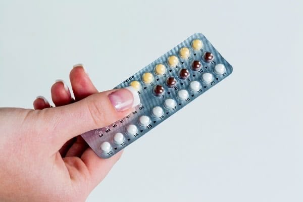

Selamat datang, Bunda! Yuk, kenali berbagai pilihan kontrasepsi setelah melahirkan, manfaatnya, kemungkinan efek samping, dan hal yang perlu ditanyakan kepada bidan.
Website ini membantu Bunda memperoleh informasi dan menyiapkan konsultasi. Pemilihan metode tetap perlu disesuaikan dengan kondisi kesehatan bersama tenaga kesehatan.
🤱🏻💗
Apa Itu E-KB PASCA SALIN?
E-KB PASCA SALIN adalah media edukasi berbasis website yang membantu ibu memperoleh informasi kontrasepsi setelah melahirkan. Bunda dapat membaca materi, mengenali kebutuhan informasi, dan menyiapkan pertanyaan sebelum berkonsultasi dengan bidan atau dokter.
🌷 Mengenal pilihan
Memahami berbagai metode kontrasepsi dengan bahasa sederhana dan gambar pendukung.
🤱 Mendukung ibu menyusui
Mengenali hal yang perlu diperhatikan saat memilih kontrasepsi selama menyusui.
💗 Menyiapkan konsultasi
Mencatat kebutuhan informasi tanpa memilihkan metode secara otomatis.
Kenali Berbagai Jenis Kontrasepsi
Pilih “Pelajari lebih lanjut” untuk mengenali cara kerja, manfaat, dan kemungkinan efek samping. Gambar pada kartu diambil dari file gambar yang kamu unggah ke folder website.

💊 Pil KB')">
Harian
Pil KB
Kontrasepsi yang diminum secara teratur sesuai petunjuk produk.
Pelajari lebih lanjut
Cara kerja: bergantung pada jenis pil; dapat menghambat ovulasi dan/atau mengentalkan lendir serviks.
Manfaat: tidak memerlukan pemasangan alat.
Kemungkinan efek samping: mual, bercak darah, sakit kepala, atau perubahan menstruasi.
Saat menyusui: pil progestin dapat dipertimbangkan bagi banyak ibu. Pil kombinasi mengandung estrogen sehingga waktu penggunaannya perlu dinilai tenaga kesehatan.
Berkala
Suntik KB 1 Bulan
Suntikan kontrasepsi yang umumnya diulang setiap satu bulan, sesuai produk.
Pelajari lebih lanjut
Cara kerja: hormon dalam suntikan mencegah kehamilan.
Manfaat: tidak perlu minum pil setiap hari.
Kemungkinan efek samping: perubahan menstruasi, sakit kepala, mual, atau keluhan lain.
Saat menyusui: beberapa produk mengandung estrogen. Waktu mulai setelah persalinan perlu dinilai tenaga kesehatan.
Berkala
Suntik KB 3 Bulan
Suntikan progestin yang umumnya diulang setiap tiga bulan sesuai jadwal layanan.
Pelajari lebih lanjut
Cara kerja: menghambat ovulasi dan mengentalkan lendir serviks.
Manfaat: tidak perlu minum pil setiap hari.
Kemungkinan efek samping: menstruasi tidak teratur atau berhenti, perubahan berat badan pada sebagian pengguna, dan kembalinya kesuburan yang dapat tertunda setelah dihentikan.
Saat menyusui: dapat dipertimbangkan bagi banyak ibu setelah penilaian waktu mulai dan kondisi ibu.
Jangka panjang
Implan
Batang kecil yang dipasang di bawah kulit lengan oleh tenaga kesehatan terlatih.
Pelajari lebih lanjut
Cara kerja: melepaskan hormon progestin.
Manfaat: sangat efektif dan tidak perlu diingat setiap hari.
Kemungkinan efek samping: perubahan pola menstruasi, sakit kepala, atau keluhan di area pemasangan.
Saat menyusui: dapat dipertimbangkan dengan memperhatikan waktu pemasangan dan kondisi ibu.
Tanpa hormon
Kondom
Metode penghalang yang digunakan setiap kali berhubungan seksual.
Pelajari lebih lanjut
Cara kerja: membantu mencegah sperma masuk ke saluran reproduksi.
Manfaat: tidak mengandung hormon dan membantu mengurangi risiko infeksi menular seksual.
Hal penting: gunakan kondom baru dengan benar setiap kali berhubungan.
Saat menyusui: tidak mengganggu produksi ASI.
Jangka panjang
IUD / AKDR
Alat kecil yang ditempatkan di dalam rahim oleh tenaga kesehatan.
Pelajari lebih lanjut
IUD tembaga: tidak mengandung hormon.
IUD hormonal: melepaskan hormon progestin.
Manfaat: perlindungan jangka panjang tanpa perlu mengingat penggunaan harian.
Kemungkinan efek samping: bergantung jenisnya; IUD tembaga dapat membuat menstruasi lebih banyak atau kram, sedangkan IUD hormonal dapat menimbulkan bercak atau perubahan menstruasi.
Saat menyusui: waktu pemasangan setelah persalinan perlu ditentukan tenaga kesehatan.
Dengan syarat tertentu
Metode Amenore Laktasi (MAL)
Metode sementara yang mengandalkan kondisi menyusui tertentu.
Pelajari lebih lanjut
Bayi berusia kurang dari enam bulan.
Menstruasi ibu belum kembali.
Bayi menyusu eksklusif atau hampir eksklusif, siang dan malam.
Ketiga syarat harus terpenuhi. Jika satu saja tidak terpenuhi, diskusikan metode lain dengan tenaga kesehatan.
Catatan: Jenis produk, kandungan hormon, jadwal penggunaan, dan waktu mulai setelah persalinan dapat berbeda. Pastikan informasi sesuai dengan pedoman dan produk yang tersedia di fasilitas kesehatan.
KB untuk Ibu Menyusui
Ibu yang menyusui tetap dapat hamil meskipun menstruasi belum kembali. Pilihan kontrasepsi perlu mempertimbangkan waktu sejak persalinan, pola menyusui, dan kondisi kesehatan.
🌿 Metode tanpa hormon
Kondom dan IUD tembaga tidak mengandung hormon. Kondom juga membantu mengurangi risiko infeksi menular seksual.
💗 Metode progestin
Pil progestin, implan, suntik progestin, dan IUD hormonal dapat dipertimbangkan oleh banyak ibu menyusui setelah penilaian tenaga kesehatan.
🩺 Metode kombinasi
Metode yang mengandung estrogen tidak cocok untuk semua ibu, khususnya pada masa awal setelah persalinan. Tanyakan waktu mulai yang tepat kepada tenaga kesehatan.
Hal yang perlu Bunda pertimbangkan
Berapa lama sejak Bunda melahirkan?
Apakah Bunda menyusui secara eksklusif atau sebagian?
Apakah Bunda memiliki kondisi kesehatan atau menggunakan obat tertentu?
Apakah Bunda menginginkan metode jangka pendek atau jangka panjang?
Efek samping apa yang ingin Bunda pahami?
Informasi ini bersifat umum dan bukan pengganti konsultasi. Jangan memulai atau mengganti kontrasepsi hanya berdasarkan website.
Kenali Kebutuhan KB-ku
Jawab pertanyaan berikut untuk merangkum informasi yang ingin Bunda pelajari. Jawaban tidak menentukan metode KB secara otomatis.
Pilihan KB-ku
Catat metode yang ingin Bunda pelajari atau diskusikan. Belum menentukan pilihan juga tidak apa-apa.
Ringkasan hanya tampil pada halaman saat ini. Data tidak otomatis disimpan atau dikirim kepada bidan maupun peneliti.
Evaluasi Manfaat Website
Bagian ini meminta pendapat Bunda tentang pengalaman membaca website, bukan kuis pengetahuan dan bukan pretest atau posttest.
Jika digunakan untuk penelitian, instrumen evaluasi perlu ditinjau dan disetujui dosen pembimbing serta disesuaikan dengan prosedur etik dan perlindungan data responden.
Langkah Berikutnya, Bunda 💗
Setelah membaca informasi, bawalah pertanyaan dan pertimbangan Bunda saat berkonsultasi dengan bidan atau dokter. Diskusikan manfaat, keterbatasan, efek samping, waktu mulai, serta kesesuaian metode dengan kondisi Bunda.